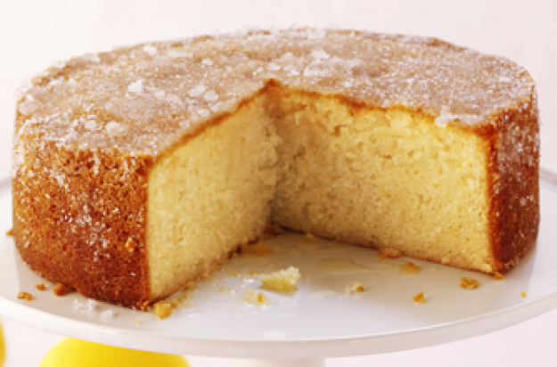

As Receitas
Bolo

Ingrediente
Quantidade
Açúcar
2 xícaras (de chá)
Farinha de trigo
3 xícaras (de chá)
Margarina
4 colheres (de sopa)
Ovos
3 unidades
Leite
3/2 xícaras (de chá)
Fermento
1 colher (de sopa)
Modo de preparo
Bata as claras em neve e reserve
Misture as gemas, a margarina e o açúcar até obter uma massa homogênea
Acrescente o leite e a farinha de trigo aos poucos sem parar de bater
Por último, adicione as claras em neve e o fermento
Despeje a massa em uma forma grande de furo central untada e enfarinhada
Asse em forno médio 180 °C, preaquecido por aproximadamente 40 minutos ou ao furar com um garfo, este saia limpo